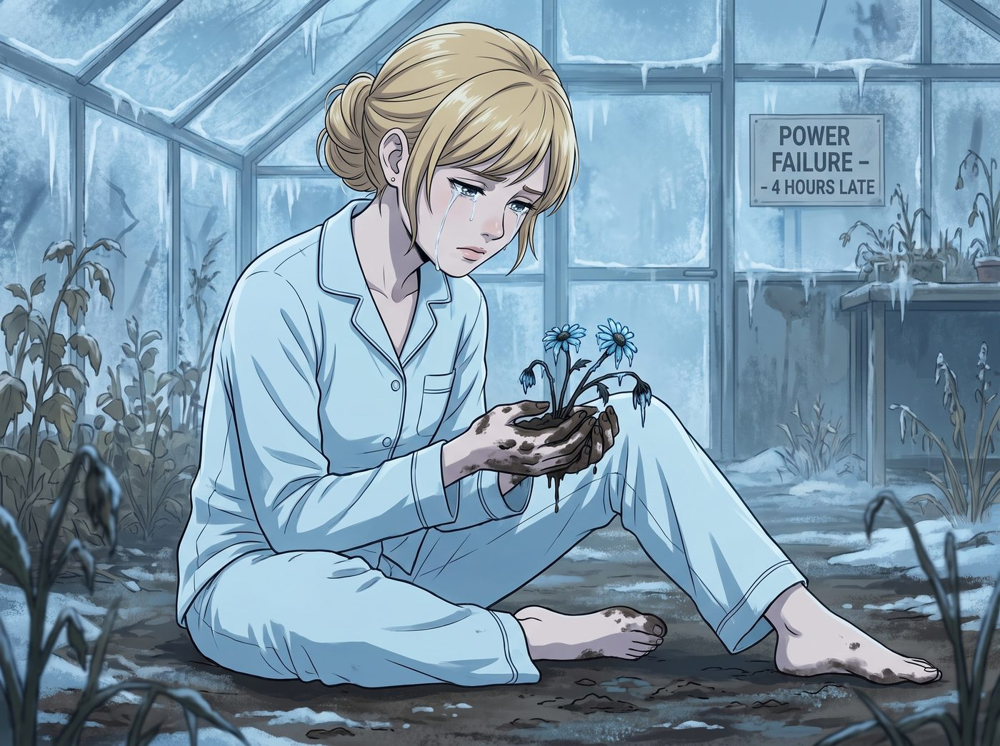

醫者不能自醫

十一月的一個凌晨，二號車廂拉響了無聲的一級防禦警報。
作為整個團隊的情緒穩定錨與腹黑食神，Kate Marsh 崩潰了。
起因是一場極端寒流導致的短暫跳電。溫室的備用電源延遲了四個小時才啟動，導致 Kate 耗費三個月心血、專門培育用來緩解 Victoria 偏頭痛的罕見藍冰洋甘菊幼苗，在一夜之間全部凍死。
當另外三個人打著哈欠走進溫室時，全都被眼前的景象嚇得僵在原地。
Kate 沒有像平時那樣帶著溫柔的微笑，也沒有展現出用日語把痴漢罵到社會性死亡的腹黑氣場。她只是穿著單薄的睡衣，毫無形象地跌坐在濕冷的泥土上。她的雙手沾滿了泥巴，手裡小心翼翼地捧著幾株已經發黑枯萎的幼苗，眼淚像斷了線的珠子一樣，安靜且絕望地往下掉。
醫者不能自醫的殘酷在這一刻體現得淋漓盡致。長期作為照顧者，Kate 把所有人的情緒都妥善安放，卻把所有的壓力與必須完美的期許壓在了自己身上。這些死去的植物，成了壓垮小天使的最後一根稻草。
面對這種情況，三個在提供常規情緒價值方面堪稱重度殘障的傢伙，陷入了史無前例的恐慌。
一、藍領猛獸的物理超度療法
如果有人受傷，Chloe 知道怎麼包紮；如果機器壞了，她知道怎麼修。但面對女孩無聲的眼淚，藍髮機械師的 CPU 直接燒毀了。
「Oh shit... Kate，別哭，別哭啊！」Chloe 慌亂地跪在泥地裡，雙手在半空中亂抓，完全不知道該不該碰她。
幾秒鐘後，Chloe 的悲傷直接轉化為了極度的狂暴。她猛地站起來，一把抄起旁邊的重型管鉗，指著那個已經恢復運轉但害死了植物的溫室恆溫器，發出了怒吼：「這該死的破銅爛鐵！居然敢讓我們的天使掉眼淚？！老娘現在就去把它拆了！我要給這個溫室接上核動力潛艇的供電級別，讓這裡以後連一隻企鵝都活不下去！」
伴隨著一陣叮咣亂響，Chloe 直接衝進了雨中，去車底改裝電網了。她的情緒支持方式，就是把導致悲傷的物理源頭挫骨揚灰。
二、資本名媛的笨拙強制愛
Victoria 踩著昂貴的絲絨拖鞋站在泥地邊緣，臉色煞白。她習慣了用支票和律師函解決問題，或者用刻薄的語言掩飾關心，但這些在哭泣的 Kate 面前統統無效。
「Marsh……」Victoria 咬了咬牙，深吸一口氣，直接走進了泥地裡。
她完全無視了昂貴拖鞋被泥水毀掉的事實，一把抓住 Kate 沾滿泥巴的手腕，不由分說地將她從地上拽了起來。「停止這種毫無意義的碳水化合物流失！不就是幾根草嗎？我的黑卡沒有額度上限，我現在就打電話把西雅圖植物園整個買下來搬到妳的溫室裡！」
但當她看到 Kate 依然通紅的眼睛時，名媛的語氣突然卡殼了。她意識到錢買不到 Kate 傾注的心血。
Victoria 僵硬地把 Kate 拖回起居廂，把她按在沙發上，然後轉身衝進了對她來說宛如異世界般的廚房。十分鐘後，Victoria 端著一個馬克杯走了出來，臉上帶著視死如歸的表情。
杯子裡裝著一杯顏色詭異、散發著焦糊味、甚至還飄著幾片未泡開的茶葉梗的熱茶。
「喝下去。」Victoria 把杯子塞進 Kate 手裡，眼神游移，語氣生硬得像是在下達收購指令，「我……我找不到妳那些裝在玻璃罐裡的高級茶葉，這是我在 Price 的櫃子裡找到的茶包，可能……水燒得有點太開了。總之，給本小姐喝下去，然後停止流眼淚！」
三、攝影師的無聲錨點
Max 是三個人裡最安靜的。她沒有去拿相機，因為有些脆弱的時刻不需要被記錄。
她只是去浴室拿了一條熱毛巾，默默地走到沙發旁，在 Kate 腳邊的地毯上盤腿坐下。Max 什麼也沒說，沒有說會好起來的，也沒有說別難過。她只是極其仔細、極其輕柔地，用熱毛巾一點一點擦去 Kate 手指上的泥土。
擦乾淨後，Max 就這樣雙手握著 Kate 的手，把下巴擱在 Kate 的膝蓋上，用一種安靜且絕對不會離開的姿態陪伴著她。
四、笨蛋們的奇蹟
Kate 坐在沙發上，手裡捧著那杯堪稱生化武器的焦糊紅茶，腳邊趴著安靜陪伴她的 Max。而窗外，Chloe 正在暴雨中一邊狂爆粗口，一邊用防水膠帶和電纜為溫室打造末日級防禦供電網。
這三個傢伙根本不懂什麼叫共情，不懂什麼叫心理疏導，甚至連一句正常的安慰都說得磕磕巴巴。
但 Kate 喝了一小口那杯難喝到令人髮指的茶，眼淚突然停了。
她看著 Victoria 裙擺上的泥巴、看著 Max 被弄髒的連帽衫、聽著外面 Chloe 為了她與天氣系統決一死戰的電鋸聲。那種醫者不能自醫的孤獨感，被這種極度混亂、笨拙卻又無比熾熱的忠誠徹底擊碎了。
「Victoria……」Kate 捧著杯子，終於露出了一個帶著淚痕、卻無比真實的無奈微笑，「這杯茶……真的好難喝哦。而且妳的拖鞋徹底報廢了。」
「閉嘴，Marsh。」Victoria 別過臉，耳根通紅，死不承認自己剛才在廚房裡手忙腳亂燙到了手，「那是……解構主義口味。而且那雙鞋本來就過季了。」
Kate 破涕為笑。她沒有被治癒，但她確信，即使她不再完美、不再是那個永遠溫柔的照顧者，這群笨蛋依然會用她們荒謬的方式，在世界末日時把她護在身後。